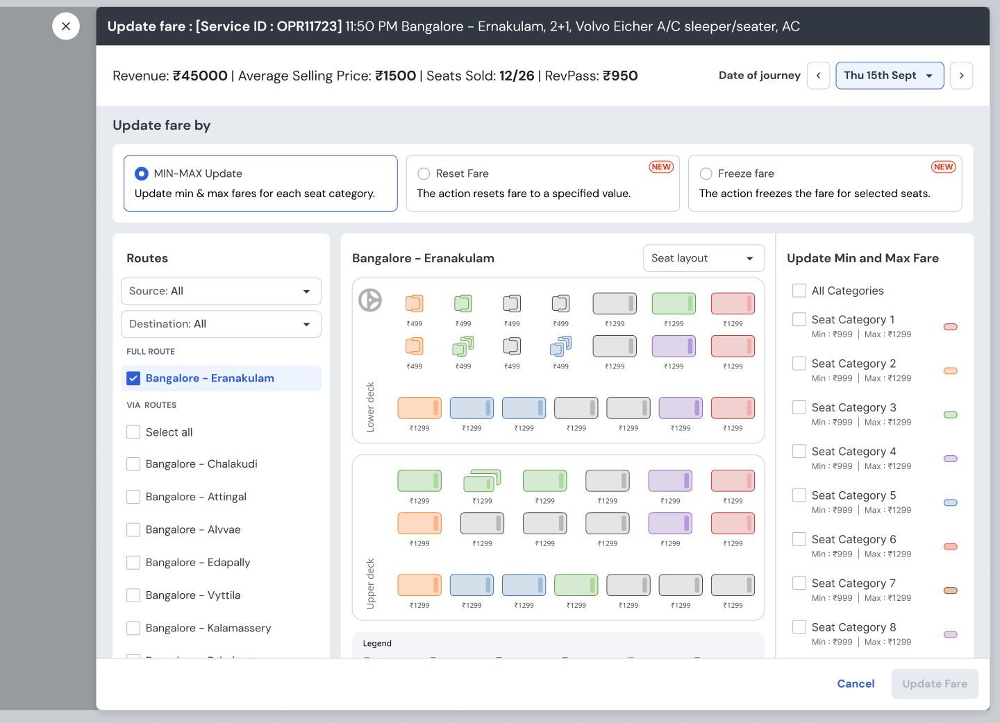
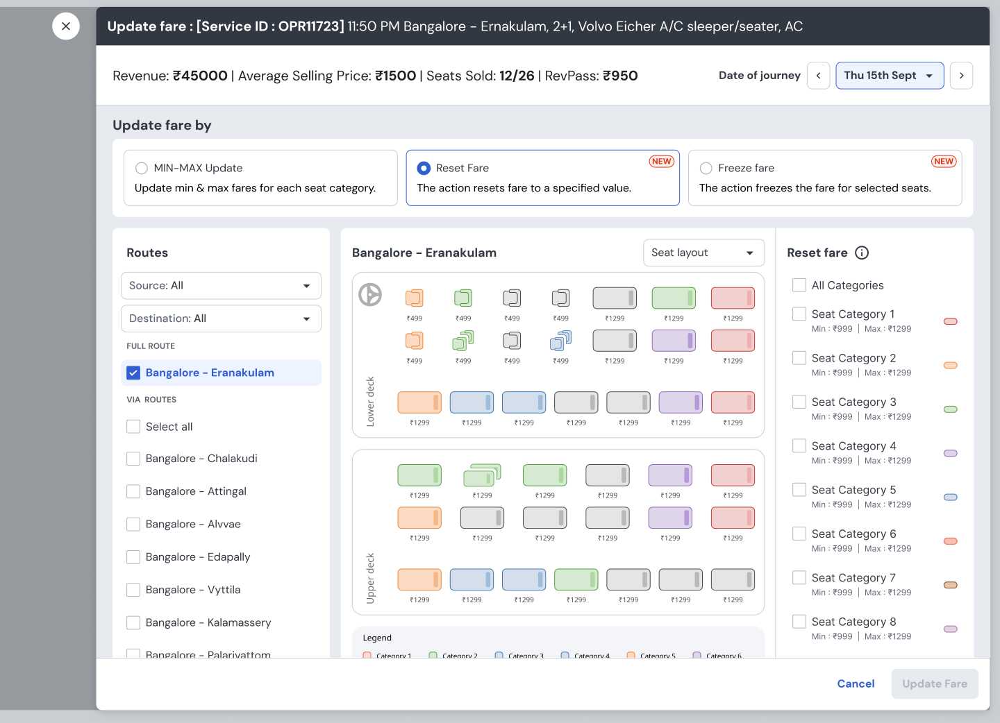
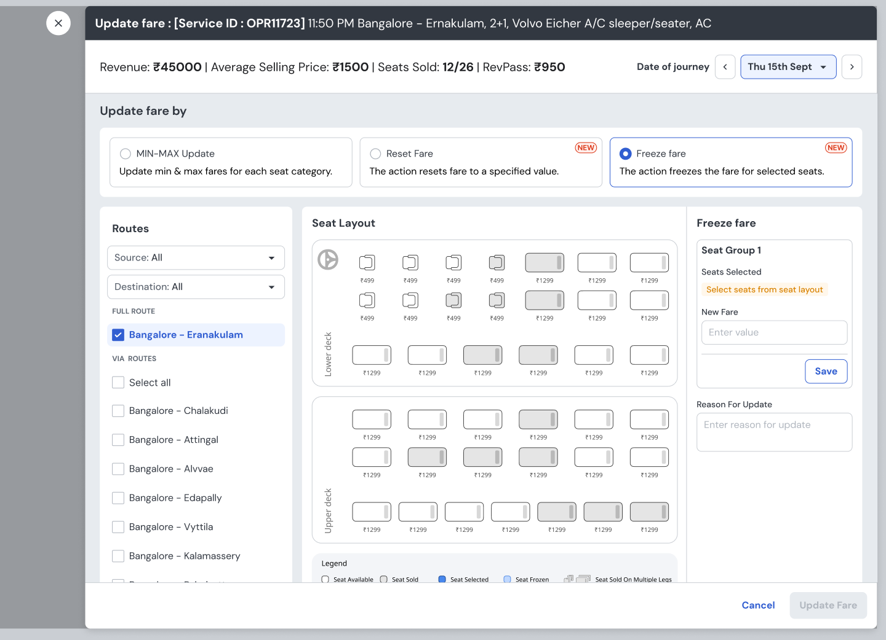

Operators couldn't change their own fares — every update meant waiting on a pricing analyst. 80% of all pricing interventions still ran through an internal portal, one manual request at a time.

revMax on the operator web portal (RPW) was hard to find, took 5+ clicks and a scroll to reach the fare modal, and exposed only a fraction of what the internal ARTH portal could do. Operators leaned on analysts; only 20% of interventions happened self-serve.
Mapped how operators actually intervene from intervention data, collapsed the flow onto a single fare surface, brought the metrics that drive pricing decisions next to the action, and shipped the three highest-volume operations operators previously had to ask for.
Live since end of November 2024. Self-serve interventions on RPW rose from 20% to 32% within ~1–2 months — strong momentum toward the 40% target — while freeing pricing analysts from repetitive data-entry.
Share of pricing interventions operators now make themselves on RPW. Since launch at the end of November 2024 it climbed from 20% to 30%, peaking at 32% in the last week of December 2024 — strong momentum toward the 40% goal. Every point is a manual request that no longer needs a pricing analyst.
Two groups felt the same gap from opposite sides — operators who couldn't act, and analysts buried in their requests.
80% of all pricing interventions still ran through analysts on ARTH — 50% reactive, 30% proactive — instead of operators handling them in seconds.
Before designing, I read three months of intervention data. The pattern was unusually tight — which meant a small, focused surface could cover the overwhelming majority of real cases.
Operators need ARTH's full power ported to RPW — every feature, every edge case.
Operators need the few operations they actually do — min/max, reset, freeze, on a single date — made effortless. Cover the 95%, don't clone the tool.
Updating a fare on RPW had to be obvious and self-evident — minimal user education, action completed in the fewest possible steps.
The operator's first experience had to be simple and seamless enough to drive repeat visits — WhatsApp/Telegram reserved only for complex, un-exposed operations.
Operators should act on the numbers that matter to them — occupancy, revenue, expenses — surfaced right where the decision is made.
If one operation must precede another, the system says so. Necessary checks run before a request executes.
If a value changes significantly — even within permissible limits — the operator is notified before it's applied.
Scope each update to a single service and date of journey (except association min-max), keeping the mental model clean and reversible.
Every operation now lives on a single screen. A segmented “Update fare by” control switches between the three modes operators need, a live metric strip ties the change to outcomes, and route + seat-layout selection sit side by side — no modal-digging, no scroll-hunting.
Seven in ten RPW interventions are min/max revisions, so it leads. Operators pick routes and seat categories on the left and middle, set new minimum and maximum fares on the right, and confirm — all without leaving the surface.
Resetting a fare to a specified value was previously analyst-only. Now it's one mode-switch away, reusing the same seat-layout mental model so there's nothing new to learn.

Freeze fare — entirely missing from RPW before — lets operators lock a price for selected seats and dates, capturing a reason for the change so the action is auditable and the system can flag anomalies.

The surface is assembled from redPro v2's component library — shared data tables, seat-layout atoms, toggles and the metric “dataUnit” card — so the three modes stay visually consistent and the patterns extend to the P1/P2 roadmap below.
Prioritised against the data — the operations and experiences that move the north-star metric first.
revMax went live at the end of November 2024 and has proven to be a highly successful self-serve / pull product — automating tasks operators previously had to request, easing pressure on pricing analysts, and minimising manual error.
Reaching 32% within just 1–2 months of launch — 12 points of the 20-point journey to target — is strong, fast momentum. Every point shifted is a manual request that no longer routes through a pricing analyst, compounding into real gains in efficiency and operator engagement.
The data did the hard editing for me. Knowing that 70% of RPW interventions are min/max on a single date meant I could design a focused surface instead of porting an entire internal tool — less to build, far less for operators to learn.
Deciding what not to expose. Keeping complex, low-frequency operations on WhatsApp/Telegram kept the first-run experience simple — the principle that protects adoption.
BO insights v2 with recommended actions, switchable pricing modes, and the whole experience on mobile — so an operator can re-price a route from their phone, the moment demand shifts.